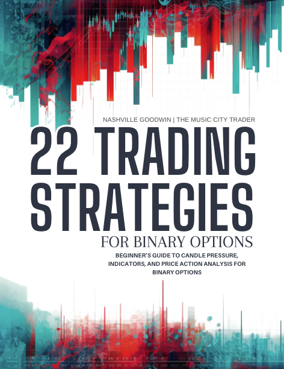
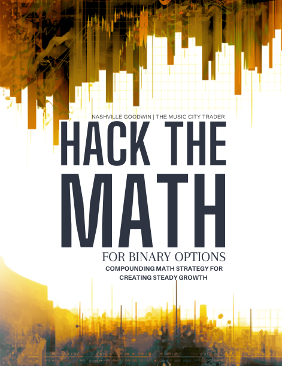

Binary Options Strategy
Ideas, lessons, and hard-earned perspective.
View resourceBinary options are not a shortcut. They require time, skill, discipline, and a willingness to learn through the hard parts.
Explore the resourcesStudy the instrument with patience, discipline, and realistic expectations.

Ideas, lessons, and hard-earned perspective.
View resource
A practical resource for understanding the numbers.
View resourceA companion for tracking and reviewing your work.
View resourceExcel-based tracking and charting sheets.
View resourceGo slowly, study, take your time, and be prepared to lose money when you start. Even with a suitable strategy and risk-management plan, losses remain possible.
This page shares personal experience and educational resources, not a promise of anyone else's results.
Explore the channel and watch Music City Trader trade, study, and share the journey on YouTube.
Follow along on YouTube to learn more, explore the strategy journey, and watch Music City Trader trading in real time.
Watch on YouTube ↗
Join the Music City Trader Tribe for resources, discussion, and updates.